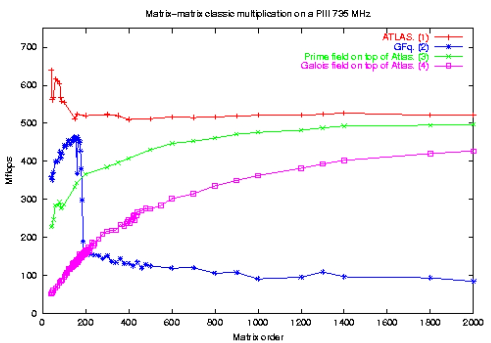

FFLAS Matrix multiplication
The core of the FFLAS library is the matrix matrix multiplication routine. It's main characteristics are
-
Uses a generic field representation ( using the
C++ template mechanism). For our tests, we used the implementation of
finite fields provided by Givaro, a package
for fast arithmetic over finite fields. The field archetype is the one
specified by the LinBox library.
- Uses a generic BLAS to oper computations, after conversion from finite fields to double, on submatrices. We only tested A.T.L.A.S., (a portable BLAS using the Automated Empirical Optimisation of Software), but we highly recommend it, for its performances and genericity.
- Is based on a Fast Matrix Multiplication Algorithm (Winograd's variant of Strassen's divide and conquer).
- Its genericity also permits to use it over
doublein order to benefit from the BLAS performances improved by the Winograd's algorithm.
The following left figure shows the improvement provided by the BLAS
(curve
3 and 4) despite the cost of the conversions to double with comparison
to a matrix multiplication without conversion (curve 2). It also
shows that the performances over finite fields tends asymptotically to
the performances
over double (curve 1).
The right figure emphasize the gain of Winograd's fast matrix multiplication algorithm compared to the O(n³) classic algorithm:
|  |

|
The combination of these two tunings leads to pretty good performances: for example the speed of 4251.08 Mfops is attained, on a P4-2.4 Ghz for the multiplication of two dense matrices of size 4000*4000 over the finite field with 101 elements (this speed correspond to the number of millions of operations per second that would require a classic matrix-multiplication to compute the same result in the same time).